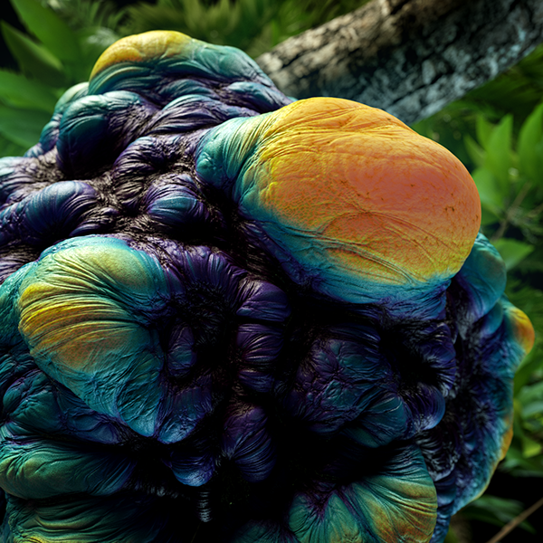
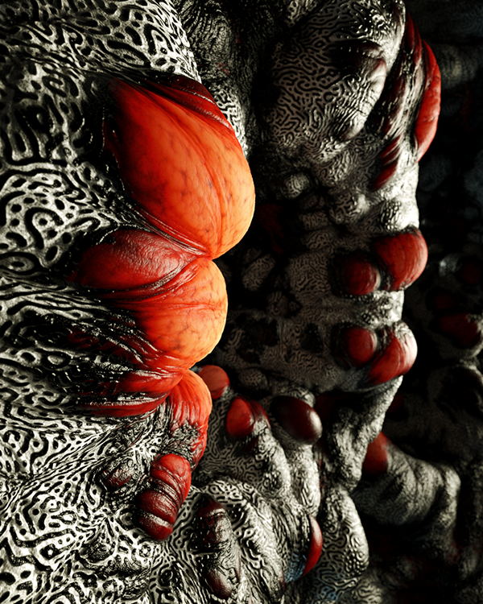

.P.U.P.A. is a short exploration of the colors and shapes inspired by a macro nature. The stage when larva transforms into a butterfly is a biological term. It's called Pupa. I decided to dive into an endless variety of abstract compositions, forms, and atmospheres. This short film is a result of a hard work in a constantly relaxed mindset that comes naturally with slow and lightly hypnotic movements of the larval bodies. Enjoy this piece with a proper sound in a dark room and let your mind relax.